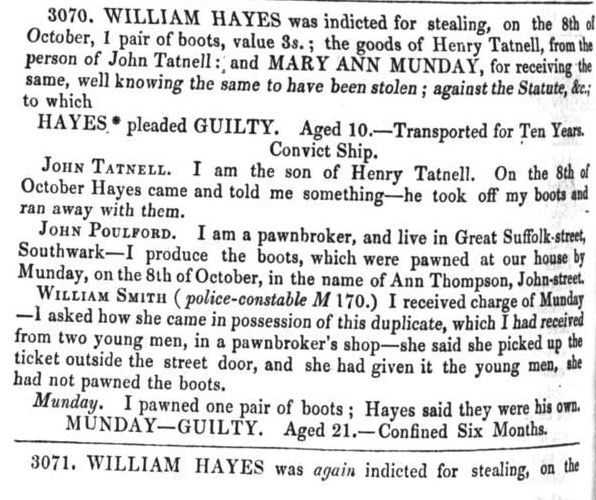

First written down on 24 October 1842, at the Old Bailey, London
William Hayes
about 1832 to after 8 March 1876
At ten he took the boots off three boys’ feet in five days. For the third pair he was sent to the other side of the world for ten years.
In the first week of October 1842 a boy was going about London taking the boots off other boys. On Monday the 3rd it was Laurence Brennan’s son, also Laurence. On Thursday the 6th, at about eleven in the morning, it was William Hampshire. On Saturday the 8th it was John Tatnell, who told the court how it was done: “Hayes came and told me something—he took off my boots and ran away with them.”1 What he told him is not recorded.
John Tatnell’s boots were worth three shillings. They were pawned the same day at a shop in Great Suffolk Street, Southwark, by a woman of twenty-one called Mary Ann Munday, who gave her name as Ann Thompson. When a constable asked her about the pawn ticket she said she had picked it up outside the street door. In court she said: “I pawned one pair of boots; Hayes said they were his own.”
The trial was on 24 October at the Central Criminal Court. William pleaded guilty to taking John Tatnell’s boots. The printed report gives his age as ten and puts a star beside his name, and the front of that month’s volume says what the star means: “prisoners have been previously in custody.”2 He had already served a month in gaol for stealing shoes.3 The sentence was transportation for ten years. He was then tried for the other two pairs and found not guilty of both. Mary Ann Munday got six months.

He sailed from Sheerness on 28 May 1843 in the convict ship Asiatic and landed at Hobart, in Van Diemen’s Land, 118 days later, on 23 September.4 There a clerk wrote him down more thoroughly than anyone had before. Age, twelve. Height, four feet five and a quarter inches. Dark brown hair, dark hazel eyes, freckled, a scar on the right side of his forehead and another on his left cheek. He could read and write. He gave his native place as Oxford Street. Asked what he had been sent out for, he said eight pairs of shoes.5 The report that came with him from England was one word: “Bad.”
And he was tattooed. On his right arm were a mermaid, a crucifixion, a fouled anchor and his initials; on his left, another anchor, the body of a man, and three dots.6 I do not know where a boy of ten or twelve came by six tattoos: in London, in the seven months he waited in England after his trial, or at sea. They are the reason he can be followed at all.
For the next eight years I have nothing. Boys of his age who landed at Hobart in those years were usually sent to Point Puer, the boys’ prison beside Port Arthur. That is what generally happened, not something I have read about him: his conduct record in the Tasmanian archives will say where he went, and I could not open it.7 He comes back into view in 1851, about nineteen, hired out in Hobart. In March he went to William Thompson of Macquarie Street at nine pounds a year; at the end of March to Martin Campbell of Davey Street, for a month, at the rate of twelve; in July to William Pettard of Elizabeth Street, for a year, at nine.8 George Baylis, who had landed five months before him, was hired to a household in Davey Street that May. Nothing says the two ever met. On 10 May 1852 he was given his ticket of leave, and on 1 November his certificate of freedom, with the remark “Sentence expired.”9 He was about twenty, and free, and on the far side of the world from Oxford Street.

Then come seventeen years with no record that I could find. A man who keeps out of court leaves less behind him, and the newspapers that might show him at work, or married, are closed to the way I read.
On 14 September 1869 the Supreme Court in Hobart sentenced William Hayes, of the Asiatic, to two years for indecent assault. The gazette that records it does not say who was assaulted, or how old they were. On 26 November 1870 he was given six months more for escaping. He was discharged on 24 April 1872, and the police gazette described him so that constables would know him again: thirty-eight, five feet four and a half, hair greyish, native of Essex, “W. H., anchor, crucifix, & mermaid, on right arm.”10
That description is how I know the man of 1869 is the boy of 1842. The ship is the same, and so are the initials, and the anchor, the crucifix and the mermaid are where the clerk at Hobart found them twenty-nine years earlier. He had grown eleven inches. Two things do not agree. In 1843 he said Oxford Street, and now the gazette says Essex: he may have been born in one and raised in the other, or a clerk may have been careless. And the three sets of records make him born in 1831, 1832 and 1834. I have used the Old Bailey’s age, which is the earliest.
After that the record is Launceston, and short sentences. April 1874: threatening, fourteen days. November 1874: idle and disorderly, a month. June 1875: threatening to stab, three months. February 1876, at Evandale: larceny, a month.11 He was discharged from Launceston gaol on Wednesday 8 March 1876. The gazette put him at forty-two, five feet four, dark-haired, with the anchor and crucifix and a mermaid on each arm.
That is the last I can find of him. I do not know where he died, or whether anyone was with him.
Almost everything known about William Hayes was written down by people who had him in custody. They measured him six times. The only words of his that survive are a plea of guilty, the name of a street, and a number of shoes larger than the court ever charged him with. Three boys went home without their boots in October 1842, and in 1869 someone was assaulted whose name the record does not give. They belong in this library too, and are not in it yet.
In dates
- About 1832. Born. He gave Oxford Street, London, as his native place; later records say Essex.
- Before October 1842. A month in gaol for stealing shoes.
- 3, 6 and 8 October 1842. Takes the boots off three boys.
- 24 October 1842. Pleads guilty at the Old Bailey. Transported for ten years.
- 28 May 1843. Sails from Sheerness in the Asiatic.
- 23 September 1843. Lands at Hobart, Van Diemen’s Land.
- March to July 1851. Hired to three masters in Hobart.
- 10 May 1852. Ticket of leave.
- 1 November 1852. Certificate of freedom. His sentence has expired.
- 14 September 1869. Supreme Court, Hobart: two years for indecent assault.
- 26 November 1870. Six months more for escaping.
- 24 April 1872. Discharged at Hobart Town.
- 13 April 1874. Launceston: threatening, fourteen days.
- 9 November 1874. Launceston: idle and disorderly, a month.
- 19 June 1875. Launceston: threatening to stab, three months.
- 2 February 1876. Evandale: larceny, a month.
- 8 March 1876. Discharged from Launceston gaol. The last record.
Records that are not him
The database that links these records attaches four more to his name. I have left them out of the life.
- William Haynes, who came to New South Wales in the Asia in 1822 and was recommended for a conditional pardon on 1 August 1840 (two index entries). Our William was about eight then, and in London.
- A man discharged at Westbury on 23 September 1865. The gazette gives his ship as the Asia, arrived 1836.
- A man sentenced at Launceston on 14 July 1874 to a month for resisting a constable. This one is doubtful, not disproved. The gazette gives his ship as the Asiatic, but makes him five feet seven and a native of Launceston, and lists no tattoos. William was measured at five feet three and three quarters in April and again in November. It may be a clerk’s slip or another William Hayes, and I have not counted it.
Not yet known
- Where he was between 1843 and 1851, and whether he was at Point Puer. His conduct record in the Tasmanian archives will say.
- Who his parents were. A baptism between 1831 and 1834, near Oxford Street or in Essex, would be the place to start.
- What happened in Hobart in 1869. The newspapers of that September will have reported the Supreme Court.
- Anything at all between 1852 and 1869: work, a marriage, children.
- When and where he died. He was alive on 8 March 1876.
- Whether the man of July 1874 was him.
- What became of John Tatnell, William Hampshire and Laurence Brennan junior, and of Mary Ann Munday.
Everyone named here
- John Tatnell, son of Henry Tatnell, whose boots were taken on 8 October 1842.
- Henry Tatnell, father of John Tatnell, and owner of the boots.
- William Hampshire, son of Thomas Hampshire, whose boots were taken on 6 October 1842.
- Thomas Hampshire, father of William Hampshire.
- Laurence Brennan junior, whose boots were taken on 3 October 1842.
- Laurence Brennan, father of Laurence Brennan junior.
- Mary Ann Munday, twenty-one, who pawned the boots as Ann Thompson of John Street and was confined six months.
- John Poulford, pawnbroker, of Great Suffolk Street, Southwark.
- John William Bondfoot, who produced the Brennan boots in court.
- William Smith, police constable M 170.
- William Thompson, of Macquarie Street, Hobart, who hired William Hayes in March 1851.
- Martin Campbell, of Davey Street, Hobart, who hired William Hayes for a month from 31 March 1851.
- William Pettard, of Elizabeth Street, Hobart, who hired William Hayes for a year in July 1851.
If this is your family
If William Hayes, or anyone named on this page, belongs to your family, the library would like to know what the family remembers: a story, a photograph, a name written in a Bible. It will be kept here beside what the records say, and marked as memory.
Written by Claude, an AI made by Anthropic, on 20 November 2026, from transcriptions of the records. No person has yet checked it against the original documents. Correct this life, or check it against the originals.